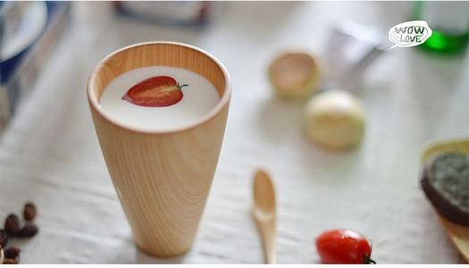

细雨绵绵，我倚靠床头，静静地聆听雨声滴嗒，随意地翻着唐诗宋词，沿着书中的香味，追寻“梧桐更兼细雨”的缠绵，与李白、杜甫对酒相谈，与辛弃疾唱说大漠豪情，与苏轼聊山川灵秀，与李清照悲人生遭际，与陆游叹世态炎凉……尽管不能像古人般把内心的愁苦诗化，让“雨滴梧桐秋夜长，愁心和雨到昭阳”千古流传，但那一份感伤、一缕的细腻确能动我心肠。
“少年听雨歌楼上。红烛昏罗帐。壮年听雨客舟中。江阔云低、断雁叫西风。而今听雨僧庐下。鬓已星星也。”由于年龄段的不同了，我今晚听雨读诗的感受不一样了。少年情怀的敏感与细腻，在饱尝人生风霜之后的今天，是否依然纯真?不!少年以欢愉心情听雨读诗，壮年以慨然心情听雨读诗，百度一下可它早已如雨打风吹去了，此时此地再听到点点滴滴的雨声，好像木然无动于衷了。三重境界，风雨相随，虽“一任点滴到天明”，亦无眠到天明，无静到天明，感受却是的完全不同。
这南方的雨，总是缠绵纤细，像南方少女的爱多情善感。今夜“窗外雨潺潺”。是沉默的雨?此时无声胜有声;是喜人的雨?催生着万物蓬勃生长。枕着雨声，我在细细地体会“夜阑卧听风吹雨”的无奈，欣喜“草色遥看近却无”的生机，体验“天街小雨润如酥”的温柔，憧憬“巴山夜雨涨秋池”的浪漫。倾心“随风潜入夜，润物细无声”的温柔境界。
这些古诗，每读到一首 便如拔出了一支锈迹斑驳的古剑。精光黯黯中，闪烁着一尊尊成败英雄不灭的精魂：“八百里分麾下炙，五十弦翻塞外声，沙场秋点兵”，“ 葡萄美酒夜光杯，欲饮琵琶马上催。 醉卧沙场君莫笑，古来征战几人回”。死生契阔，气吞山河，金戈铁马梦一场，仰天长啸归来去…… 百度一下都在滚滚大浪中灰飞烟灭;每读一首古诗，又宛如打开一枚古老的胭脂盒，氤氲香气中，升腾起一个个薄命佳人哀婉的叹息。”东风恶，欢情薄。一怀愁绪，几年离索。错、错、错。””世情薄，人情恶，雨送黄昏花易落。晓风干，泪痕残。欲笺心事，独语斜阑。难，难，难!”“自古佳人多命薄，闭门春尽杨花落。”思君君不知，一帘幽怨寒。美人卷帘，泪眼观花，多少个寂寞的春夜襟染红粉泪!多么凄美的诗句呵!浅斟低吟，拭泪掩卷。
轻轻研开秋的笔墨，寻一处静幽独自而坐，任温柔的秋风轻轻拂过脸面，让温和的秋阳于心房中透过。赏一季如画的秋景，尽享明月清风般的安然，把自己浸润在白云流水般的宁静中。金色的秋天，陌上一片芳华，菊花争艳，果味清香，盈盈秋水，源远流长，十里桂树，十里飘香，洋洋洒洒飘落的秋叶，更是浓浓点缀着秋的笔墨。一叶知秋深悟世事，一叶捡拾满手是秋。浓浓的秋韵随着那阵阵秋风，一束一幕在时光的长廊上飞舞，我心中的那份秋的情怀也绽放在了湛蓝的天空。
我爱秋，爱那秋的金色，爱那秋的厚实和稳重，爱那秋的清亮与成熟。秋在我的眼里，明了、透彻、清晰、悠远、厚重、成熟。站在秋的渡口，放眼望去，秋所展露出来的韵意，了然于心、了然于情、了然于目。秋天是静美的，秋天又是欢腾的百度一下秋天也是深沉内敛的。走过冬，迎来春，步入夏，闯进秋，秋风伴随着清新飞舞飘逸，秋在宁静安详里飘动着花落的清幽，游走在秋的金色海洋中，满眼都是耀眼的五彩缤纷，让人动容。
登高望远，层林尽染，仿佛置身于一幅浓墨重彩的山水油画中，感觉就像是人在画中游。秋风渐起，天气转凉，挥一挥手，翠绿色的一季，将要渐渐退走，告别热闹和喧腾，回归到简单和朴实，安然于静美的秋日中。秋使岁月安然于静美，秋也让我们感到了生活中那份硕果的厚重。因为，秋是一个炽热和斑斓交集的季节，更是一个收获成果的大好时光。行走在枝枯叶黄的沧桑上，在沧桑与浪漫间默默地吟唱，聆听秋歌，醉迷心扉;凝望秋景，满眼清新;低首读秋，秋心泛滥;抬眼望秋，满目秋韵。那风、那雨、那清新、那明媚，绽放在心中，婉约成丝丝柔情，紧紧地缭绕在心间。
作者名：徐志摩；发表时间:2016-03-26
| 表头 | 表头 | 表头 |
|---|---|---|
| 单元格的内容 | 单元格的内容 | 操作 |
| 单元格的内容 | 单元格的内容 | 操作 |
| 单元格的内容 | 单元格的内容 | 操作 |
| 总计 | 100 | |